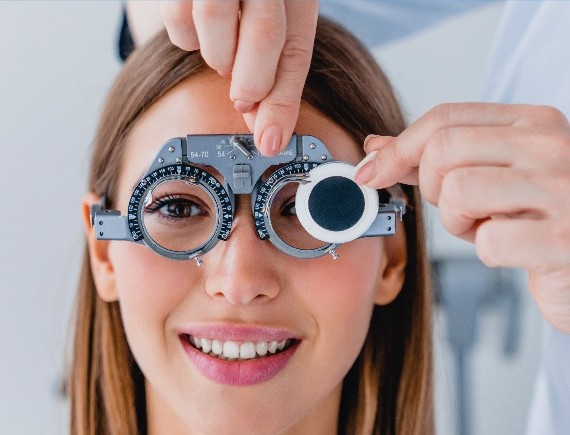

Promoción permanente
Tu consulta es gratis si te llevas tus lentes
Examen visual con profesionales y más de 40 modelos para elegir. Si compras tus lentes con nosotros, la consulta no tiene costo.

$0consulta
Más de10 años de experiencia
Todos nuestroslentes con garantía
Boletas para reembolsoFonasa, Isapres y seguros
Convenios concuotas para trabajadores
Más de 40 modelos para adultos, niños y de sol. Filtra por forma, material y color.
Monofocal, bifocal, multifocal, de descanso o de sol con aumento.
Antirreflejo, filtro luz azul, fotocromático o cristal adelgazado.
Sube una foto o PDF, o escribe tus grados. ¿No tienes receta? Agenda tu consulta: es gratis si compras tus lentes.
Envío a domicilio, retiro en una de nuestras 2 tiendas o entrega en tu empresa.
Desliza hacia abajo para ver cómo cambia tu visión con cada tipo de cristal. (Ilustración referencial)
Te ayudamos a elegir según tu receta, tu rutina y tu estilo.
Corrigen una sola distancia: lejos o cerca. Para miopía, hipermetropía y astigmatismo.
Lejos, intermedio y cerca en un solo lente, con transición suave y sin línea visible.
Dos zonas definidas: la superior para lejos y un segmento inferior para leer.
Alivian la fatiga visual en jornadas largas de lectura, pantalla o trabajo de cerca.
Filtran parte de la luz azul de pantallas y celulares. Para quienes trabajan frente al computador.
Se oscurecen con el sol y vuelven a ser claros bajo techo. Un solo lente para todo el día.
Protección UV con tu receta incluida, para manejar o disfrutar el exterior viendo bien.
En tu consulta te recomendamos el cristal adecuado para tu receta.
Pedir asesoríaAgenda tu examen visual. Si eliges tus lentes con nosotros, no pagas la consulta.
Quiero agendarPor WhatsApp o con el formulario. Te confirmamos el horario.
Medimos tu visión y te explicamos tu receta.
Al llevártelos con nosotros, la consulta queda en $0.
Atendemos en terreno. Tus trabajadores se evalúan sin salir del trabajo.
Fecha, horario y lugar con tu empresa.
Llegamos con nuestro equipo y el equipamiento.
A cada trabajador que quiera participar.
Los lentes en la empresa, con pago en cuotas por convenio.
Monofocales, multifocales, bifocales, descanso, luz azul, fotocromáticos y de sol con aumento.
¡Es fácil, rápido y profesional!
Te entregamos boleta para que solicites tu reembolso en tu sistema de salud o seguro complementario.
Paga tus lentes en cuotas, según el acuerdo con tu empleador.
Elige un marco en el catálogo, selecciona el tipo de cristal y los tratamientos, y adjunta tu receta: puedes subir una foto o PDF, o escribir tus grados. Revisamos la receta antes de fabricar tus lentes.
Puedes agendar una consulta con nosotros. Si compras tus lentes, la consulta es gratis.
Es la distancia entre el centro de tus pupilas, en milímetros. Suele venir en la receta; si no la tienes, la medimos en la tienda.
Sí. Te entregamos la boleta para que hagas el trámite en Fonasa, tu Isapre o tu seguro complementario. El monto depende de tu plan.
Todos nuestros lentes tienen garantía. Al entregarlos te explicamos qué cubre y por cuánto tiempo.
Para la empresa no tiene costo. Coordinamos la visita y cada trabajador paga solo los lentes que compre, con cuotas por convenio.
Completa el formulario y te respondemos por WhatsApp. ¡Es fácil, rápido y profesional!